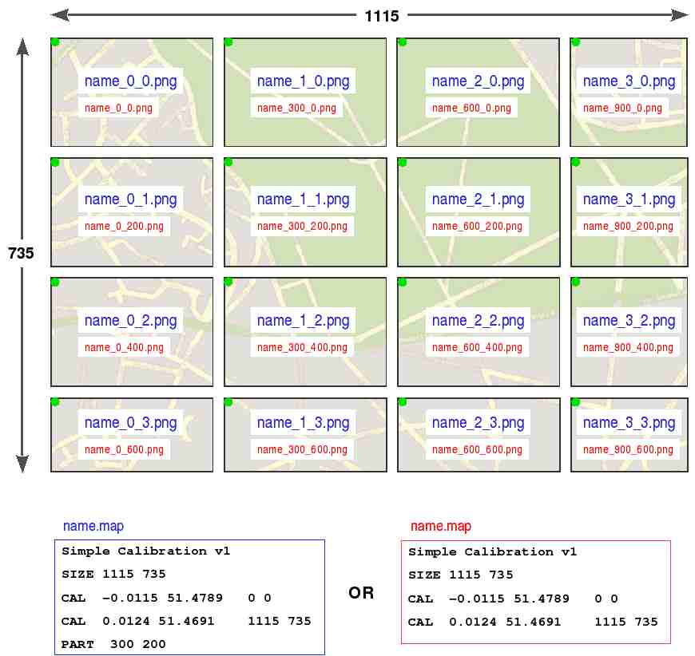

PocketGPS-Map
(c) 2007 Andrej Krutak
Distributed
under GPLv2 or newer
Program is using libjpeg, libz and libpng code.
This
is my "thank you!" to their authors...
USAGE
Basics
The program can be run on win32 (WindowsXP tested)
and PocketPC platform (tested on 2003 emulator and a WM5.0 HTC Wizard device).
Of course, you have to use different binaries :-) The win32 version has exactly
the same capabilities and almost the same look as the pocketpc one (except that
you can't use too big images on PPC - unless you use tiled ones.. see below).
The main reason for it's existence is to test maps - it's simpler to prepare and
test a map on desktop than on a PDA/smartphone.
After you start the
program, the first thing you may want to do is select source of GPS "signal" -
using the Config-Set GPS Device menu item. In current version,
it can be either serial (COM) port or a file with stored "signal stream" (raw
NMEA protocol data).
Now you can switch to the GPS Info view
(Config-Show GPS info) to see informations (like your position,
satellite position info) from the GPS signal source.
Maybe you want to
use the program for navigating in maps. You can choose the atlas containing maps
by Config-Load atlas. There you have to input path to the the
atlas (use \ character to separate directories, and put a \ also on the end of
path). After that, program automagically searches available maps and starts
using them. Oh yes - you can switch to Map view by using Config-Show
Map)
Advanced usage
You may want to navigate to certain points in
the map. For that you can use Map-Waypoints menu item. There
you can add new waypoints and select the one to which you will navigate in map.
If you press the button "Clear selection", no waypoint will be selected. After
you press OK, the program will start the navigation to selected waypoints (if
any).
Note: When inputting the coordinates, the North and East
values are positive numbers (+14.2231, 55.904), West and South are negative
(-13.214). You can use the provided coordinate-helper (by pressing button ° in
the right of longitude/latitude field) - it will help you with conversion of
coordinates to required format.
By using zoom in/out,
you can select more or less precise map, if there is any in atlas, for your
current location. If follow position is checked (the checking
may not work on pocketpc 2003, but the function still works ;-), the your
position will be always in the center of view. Auto switch
ensures automatical selection of map (if there is any apropriate), if you go
outside the current one. Always best zoom item makes the
program always choose the map with best zoom. If it isn't checked/used, map
won't be changed until you go outside of it. You can choose to view any map from
the atlas by Choose map item (note that all 3 previous
functions are automatically disabled in this case... you can reenable them, but
other than selected map may be open afterwards).
GPS Info screen
This screen contains info about the data
from GPS device/data source.
First line contains count of NMEA messages
received from the source and the current time of the source.
The second
row contains list of used satellites and strengths of their signals.
Next
line contains mode of GPS (whether there is a fix, if it is 2D or 3D and what is
the accuracy).
Then there is number of satellites in view used for position
calculation.
Next lines specify current position (Latitude, Longitude,
Altitude)...
The compass on the right side of display shows where the
north is (assuming that you are moving with the pda in front of you) and where
are the satellites on the sky (blue ones are the ones used in
calculations).
Map screen
The main part of screen is the map :-) If a big
green circle is visible, that is your position. The cyan arrow shows direction
of your movement and the white (empty inside) one shows direction to the
waypoint (if any selected).
Orange circle, if shown, is the waypoint
position.
On the bottom of screen you can see:
In 1st column the
current position.
In 2nd column altitude and speed.
In 3rd column distance
to the waypoint and direction where in which you should move if you want to get
to the waypoint (assumes you are moving with the PDA in front of you).
CREATING OWN MAPS/ATLASES
Atlas
Atlas is just a directory containing other directories
:-) Each directory contained has to contain one map.
The structure of atlas
may look like this:
atlas\
map1\
map1.map
map1.png
map123\
map123.map
set\
map123_0_0.png
map123_100_0.png
Additionaly, you can use TAR files (tarballs) to 'pack' maps
into one file (might be useful if you have many maps which contain many files -
the space on storage card is better used this way). Each tar file must have the
same structure as a map directory, e.g.:
atlas\
map1.tar\
map1.map
set\
map1_0_0.png
...
Map
Each map is defined by a file with a name in form
MAPNAME.map, where MAPNAME is the name of map directory. Currently PocketGPS-Map
support (hopefully) OziExplorer (or TrekBuddy) map format and it's own simple
format (it's preferred for simple creating :-)).
OziExplorer
format
...TODO (you may find the description
elsewhere)
Own simple format
The .map file begins
with
Simple Calibration v1
string.
Then any number of lines may follow.
Each one has to begin with a tag (1 word) meaning, what does the line specify.
Here are currenly recognized tags:
SIZE x y - specifies total size
of image
DATUM datum_name - specifies datum of coordinates of
calibration points (see below)
CAL lon lat x y - specifies a
calibration point. Meaning: specifies that point [x,y] on the map is [lon,lat]
in real world.
IMG path - specifies, which image should be loaded
for this map. If nothing specified, images from set or
pictures subdirectory will be used
PART x y - specifies
size of a image tile (see next section)
Map calibration
If you want to use the map with GPS, you
have to specify calibration points. A calibration point specifies, which point
in map coresponds to which point in the real world (latitude/longitude). The
more points are specified, the more accurate the position in the map can be
calculated. However, at least 2 points have to be specified (the nearer to top
left and bootom right corners, the better).
There are many different so
called datums that can be used to specify world-coordinates (mostly
these are country/region-specific). GPS devices mostly use WGS-84 datum, and so
do e.g. Google maps. Anyway, you might get a map that is calibrated using other
datum. In this case, you can find the datums supported by pocketgps-map in
datums.csv file in it's directory. Choose the one nearest to original
map datum (most probably you will find exactly the one you are searching for...
otherwise you can add the datum to the datum.csv file by yourself - an you can
also send the new datum to the author) and specify it by DATUM tag in
calibration file. If you don't know how to work with datums, you might some
informations on google.
Image files
When you create a map, you obviously have to
give some bitmap to the program :-) It currently supports BMP, PNG and JPG
formats. If you use just one image, specify it in configuration file.
If
you want to used tiled image (really good for PDAs and other devices with
limited memory), you have to slice the images to parts and put them in
set or pictures subdirectory (in any of the 3 mentioned
formats).
If you are using OziExplorer map definition format, you have to
name images in format MAPNAME_x_y.EXT, where x and y is the position of top left
corner of tile in the whole image.
You can use the same convention in
simple format. However you can also index the images (like MAPNAME_0_0.EXT,
MAPNAME_0_1.EXT etc.), but in this case you have to manually specify tile size
by using the PART tagged line.
Explanation of tiled images
The tiled image names can be in
two formats...
* First
- more intuitive - is that you split the big image
into small pieces. Let's say the image has dimensions 3005x2005 and you want to
split it into pieces of size 100x50. In this case, images will be named
like
prefix_0_0.jpg
prefix_0_50.jpg
prefix_0_100.jpg
...
prefix_100_0.jpg
...
prefix_3000_2000.jpg
(The
pieces on the right and bottom don't have to be of full size - they can be
smaller (in a logical way :-))).
All these files have to be placed inside
of 'set' subdirectory of map. The name of map configuration file is then
'prefix.map' and the map directory has to be named 'prefix'. The corresponding
map could look like the following then:
<<<<<
Simple
Calibration v1
SIZE 3005 2005
CAL 1 2 0 0
CAL 3 4 3005
2005
<<<<<
* Second
is similar to the first - the only difference is
the naming of files and a little addition to configuration file. Some programs
can't name the tiles of original images the way mentioned, they'd do it
like:
prefix_0_0.jpg
prefix_0_1.jpg
prefix_0_2.jpg
...
prefix_1_0.jpg
...
prefix_30_40.jpg
(maybe the numbers here are wrong, I'm not in the mood to check :-))
In
this case you just have to add a line
<<<<<<
PART
100 50
<<<<<<
to the config file (in addition to
already mentioned contents) to specify size of a tile (again - the tiles on the
right and bottom can be of different sizes, of course). If you don't specify
this, program will try to guess the size of tile by loading the prefix_0_0 file.
This can slowdown the program startup - so you better specify this in
configuration file, if it's possible.
As you can see, you only specify
calibration points for the whole (virtual) image (the tiles are just an
abstraction :-)).
I don't know what do you mean by overlappting tiled
images - but the tiles of a single image have to face each other (i.e. tiles of
image can be created by simply cutting the image to pieces).
Hopefully
the following image will clarify the concept of tiled images another bit more
(thanks to axel):

FINAL NOTES
ALWAYS use lowercase filenames (esp. bitmap
extensions - program currently recognizes only bmp, png, jpg (i.e. not bMp or
whatever)). This may/will get better in future :-)